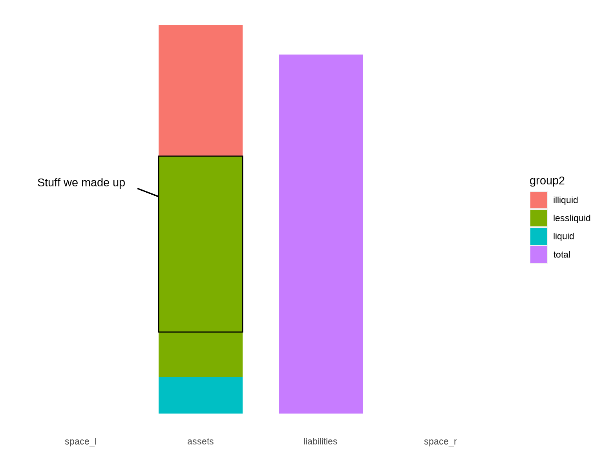
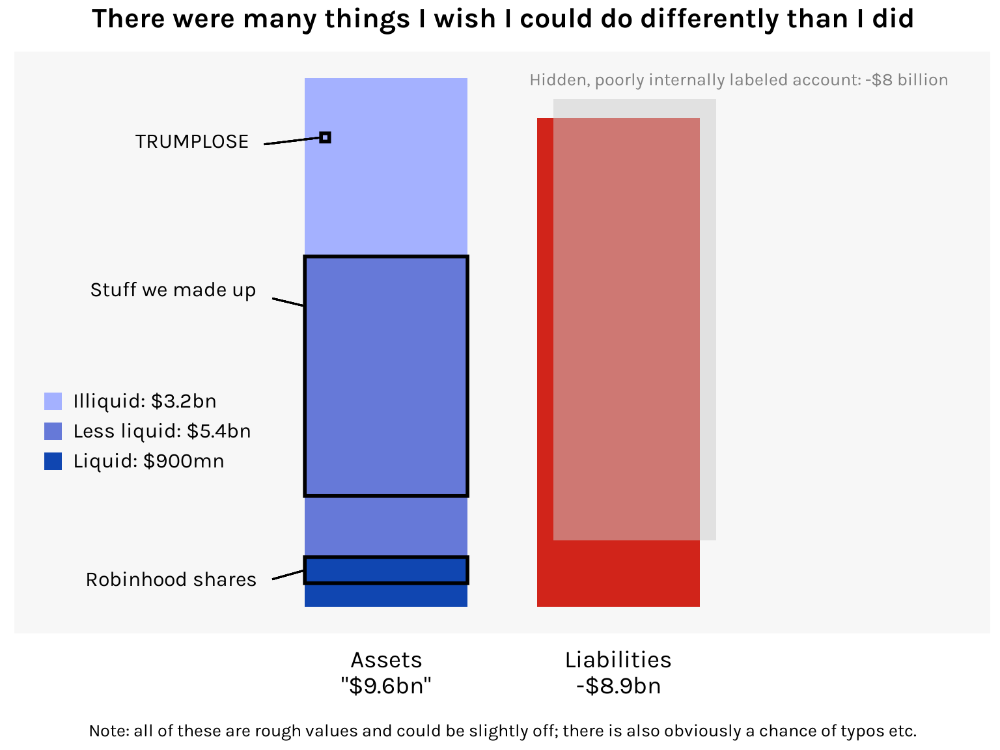

SBF shops around for investors with a balance sheet that is emphatically not GAAP
bar
Published
November 15, 2022
I was reading Matt Levine’s entertaining walkthrough of the FTX balance sheet and I thought it’d be fun to visualize this, um, unique financial document. FTX is a crypto exchange that collapsed spectacularly last week. There are already plans for a movie adaptation and I hope Sorkin and Fincher reunite for it.
The balance sheet in question is dated 10 November and appears to have been constructed by SBF himself. It sent prospective investors running the other way. Per Levine: “It’s an Excel file full of the howling of ghosts and the shrieking of tortured souls. If you look too long at that spreadsheet, you will go insane.”
For this visualization, I want to show the assets and liabilities in two bars, with the assets bar broken down into the various weird things that FTX counted as assets. I will be employing a lot of visual trickery in this chart and I’d like to walk you through my process.
First, here is how I gathered the numbers into a dataset. Doing it in this “long” format makes it easier to chart.
I’m going to annotate these bars with subcategories of interest, so I’ll need some space on the sides. To get this, I’ll add phantom categories to the “group1” column.
For the annotations, we will be using geom_rect(), geom_segment(), annotate(), and a significant amount of trial and error. Let me demonstrate by annotating the portion of the “less liquid” assets that comprise the stuff FTX “made up” (FTT, SRM, SOL, and MAPS tokens). We’ll first need to identify some coordinates in the plot space:
bw <- .35plot +geom_rect(xmin =2- bw, xmax =2+ bw, ymin = h3, ymax = h2,data = df1[1, ], fill =NA, color ="black" ) +geom_segment(x =2- bw, xend =2-1.5* bw, y = h2 -1, yend = h2 - .8,color ="black" ) +annotate("text",x =2-1.8* bw, y = h2 - .65, hjust =1,label ="Stuff we made up" )

Note that all the positioning values were discovered through trial and error. So if you’re doing something like this, try and organize your values around fundamental constants of the chart. For example, bw here is half the width of the bars.
Now let’s add all the other annotations, and while we’re at it let’s tweak the aesthetics of the chart. There’s also the question of where to place the 8-billion-dollar “hidden, poorly internally labeled ‘fiat@’ account”. No one’s really sure what to do with this. Writes Matt Levine:
If you try to calculate the equity of a balance sheet with an entry for HIDDEN POORLY INTERNALLY LABELED ACCOUNT, Microsoft Clippy will appear before you in the flesh, bloodshot and staggering, with a knife in his little paper-clip hand, saying “just what do you think you’re doing Dave?” You cannot apply ordinary arithmetic to numbers in a cell labeled “HIDDEN POORLY INTERNALLY LABELED ACCOUNT.” The result of adding or subtracting those numbers with ordinary numbers is not a number; it is prison.
Given this expert advice, I’ve decided to give it its own accurately sized bar that kind of just hovers over the liabilities bar, like a ghoul.
Here’s the final chart:
Code
ggplot(df1, aes(x = group1, y = billions, fill = group2)) +geom_bar(stat ="identity", position ="stack", width = .7) +# Hidden poorly internally labeled accountgeom_rect(xmin =3- .8* bw, xmax =3+1.2* bw, ymin =1.2, ymax =1.2+8,data = df1[1, ], fill ="gray80", alpha = .5 ) +annotate("text",x =3-1.1* bw, y =8+1.45, family ="karla", size =10/ .pt, vjust =0, hjust =0, color ="gray50",label ="Hidden, poorly internally labeled account: -$8 billion" ) +# Robinhood sharesgeom_rect(xmin =2- bw, xmax =2+ bw, ymin = h1 - .472, ymax = h1,data = df1[1, ], fill =NA, color ="black", linewidth =1 ) +geom_segment(x =2- bw, xend =2-1.4* bw, y = h1 - .472/2, yend = h1 - .4,linewidth = .5, color ="black" ) +annotate("text",x =2-1.6* bw, y = h1 - .4, family ="karla", size =12/ .pt, hjust =1,label ="Robinhood shares" ) +# Stuff we made upgeom_rect(xmin =2- bw, xmax =2+ bw, ymin = h3, ymax = h2,data = df1[1, ], fill =NA, color ="black", linewidth =1 ) +geom_segment(x =2- bw, xend =2-1.4* bw, y = h2 - .9, yend = h2 - .76,linewidth = .5, color ="black" ) +annotate("text",x =2-1.6* bw, y = h2 - .6, family ="karla", size =12/ .pt, hjust =1,label ="Stuff we made up" ) +# TRUMPLOSEgeom_rect(xmin =2- .8* bw, xmax =2- .7* bw, ymin = h4 -1.15, ymax = h4 -1,data = df1[1, ], fill =NA, color ="black", linewidth =1 ) +geom_segment(x =2- .8* bw, xend =2-1.5* bw, y = h4 -1.075, yend = h4 -1.2,linewidth = .5, color ="black" ) +annotate("text",x =2-1.7* bw, y = h4 -1.15, family ="karla", size =12/ .pt, hjust =1,label ="TRUMPLOSE" ) +# Labels and legendlabs(title ="There were many things I wish I could do differently than I did",caption ="Note: all of these are rough values and could be slightly off; there is also obviously a chance of typos etc." ) +scale_fill_manual(labels =c("Illiquid: $3.2bn", "Less liquid: $5.4bn", "Liquid: $900mn", ""),values =c("#a4b1ff", "#6679d8", "#1046b1", "#d1241a") ) +scale_x_discrete(labels =c("", "Assets\n\"$9.6bn\"", "Liabilities\n-$8.9bn", "")) +guides(fill =guide_legend(keywidth =unit(.8, "lines"),keyheight =unit(.8, "lines"),byrow =TRUE,override.aes =list(alpha =c(1, 1, 1, 0)) )) +# Themetheme_minimal(base_family ="karla") +theme(plot.title =element_text(size =16, face ="bold", hjust = .5, margin =margin(b =10)),plot.caption =element_text(size =10, hjust = .5, margin =margin(t =15)),axis.title =element_blank(),axis.text.x =element_text(size =14, color ="black", margin =margin(t =8)),axis.text.y =element_blank(),axis.ticks =element_blank(),legend.position =c(.02, .45),legend.background =element_blank(),legend.justification =c(0, 1),legend.title =element_blank(),legend.text =element_text(size =12),legend.spacing.y =unit(.4, "lines"),legend.key =element_blank(),panel.background =element_rect(fill ="gray97", color =NA),panel.grid =element_blank() )

I think this exercise really brings out the “grid” nature of ggplot. It may be painstaking but as long as you can place your rectangle or line or textbox in the x-y coordinate system, you can modify your chart in all sorts of fun ways.